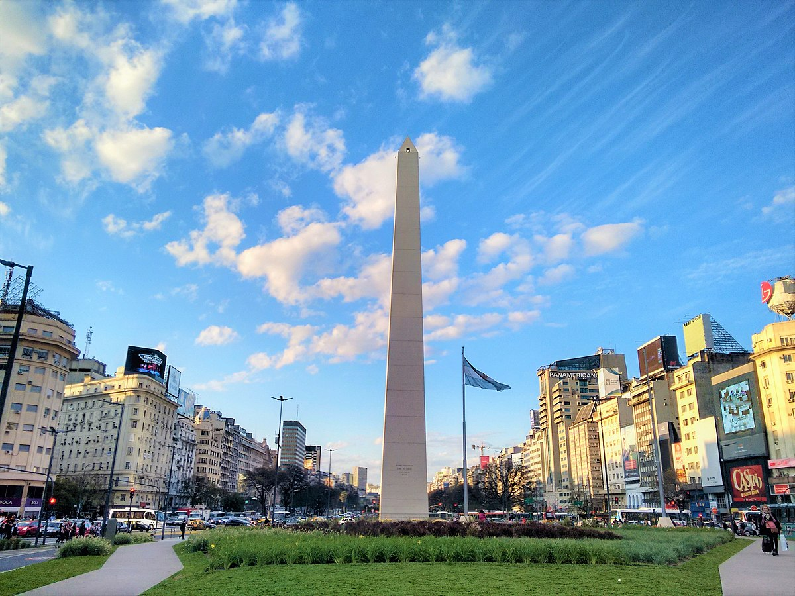

-
Obelisco
El Obelisco es el mayor emblema de la Ciudad de Buenos Aires y de sus habitantes, como lo son la Torre Eiffel respecto a París o la Estatua de la Libertad en relación a Nueva York. Fue inaugurado el 23 de mayo de 1936 como homenaje al cuarto centenario de la primera fundación de Buenos Aires. Este monumento se levantó en el mismo lugar donde fue izada la bandera nacional por primera vez en la Ciudad. Es obra del arquitecto Alberto Prebisch, uno de los principales exponentes del modernismo Argentino y autor también del vecino Teatro Gran Rex.
-
Monumental
Veni a conocer el "Nuevo Monumental" la cancha mas grande de sudamerica. Visitantes de todo el planeta viajan miles de kilómetros sólo para tocar sus muros, como si se tratase de un templo. Pero ello no sorprende: después de todo, el Monumental es una de las mecas del fútbol mundial y en sus gradas se reúnen todas las semanas, desde hace más de 75 años, miles de fanaticos para celebrar la fiesta del fútbol.
-
La Boca
La callecita de La Boca está entre los 10 lugares más fotografiados del mundo, según estadísticas de Google Maps -detrás del Museo Guggenheim de Nueva York, de Piazza Spagna en Roma y de otras 6 maravillas-. Así que es lógico que se sepa parte de su historia. Porque ese paseo con casitas altas de madera y chapa, esculturas y ecos de tango, inaugurado el 18 de octubre de 1959, tiene todavía, "secretos" guardados.
-
Puerto Madero
Desde los edificios de ladrillo rojo renovados y las grúas del puerto hasta los modernos rascacielos y los lujosos bloques de apartamentos, Puerto Madero combina a la perfección lo antiguo y lo moderno. Cruzando el río, flanqueado por rascacielos, encontrarás preciosos parques y calles tranquilas que hacen de este barrio un destino único en una ciudad tan transitada como Buenos Aires. Los restaurantes, bares y clubes nocturnos del muelle lo convierten en uno de los lugares más populares para salir por la noche y han llegado a simbolizar esta zona. Puerto Madero impresiona aún más cuando cae la noche, momento en el que las luces del muelle y los rascacielos destacan sobre el cielo nocturno.
-
Plaza de Mayo
La Plaza de Mayo es la más antigua de Buenos Aires y escenario de todos los acontecimientos políticos más importantes de la historia argentina, a excepción de la Declaración de la Independencia. Su nombre es en homenaje a la Revolución del 25 de Mayo de 1810, que ocurrió en esta misma plaza y que dio inicio a la gesta de la Independencia argentina, a partir de la cual se comenzó a elegir una forma de gobierno propia.
-
El Rosedal
El barrio de Palermo ofrece a la Ciudad de Buenos Aires un gran pulmón verde entre tanto cemento. Se trata del Parque Tres de Febrero, también llamado Bosques de Palermo, conformado por una variada arboleda, lagos artificiales y rosedales. Acá nos referiremos al Rosedal de Palermo.El Rosedal de Palermo florecen miles de rosas, dándole al lugar unos hermosos colores y delicados aromas.Alrededor del Rosedal se realizan diversas actividades físicas aprovechando la pureza del aire y la paz del verde. Es muy común ver gente trotando, en bicicleta o en rollers.
-
Teatro Colon
El Teatro Colón de Buenos Aires es una de las salas de ópera más importantes del mundo. Su rico y prestigioso historial y las excepcionales condiciones acústicas y arquitectónicas de su edificio lo colocan al nivel de teatros como la Scala de Milán, la Ópera de París, la Ópera de Viena, el Covent Garden de Londres y el Metropolitan de Nueva York